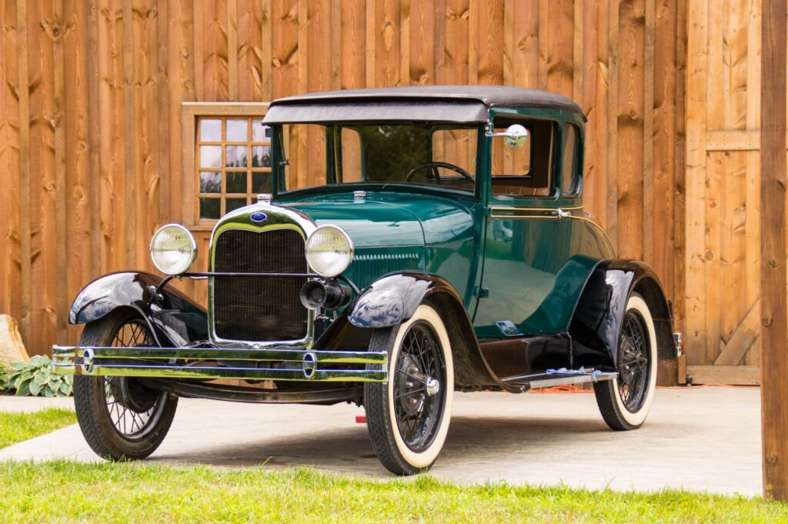
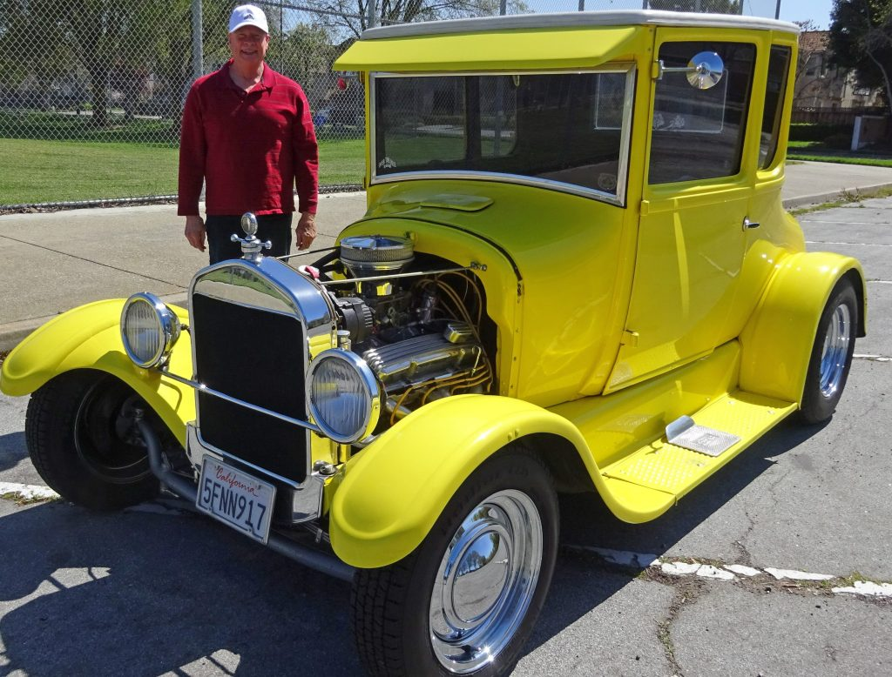
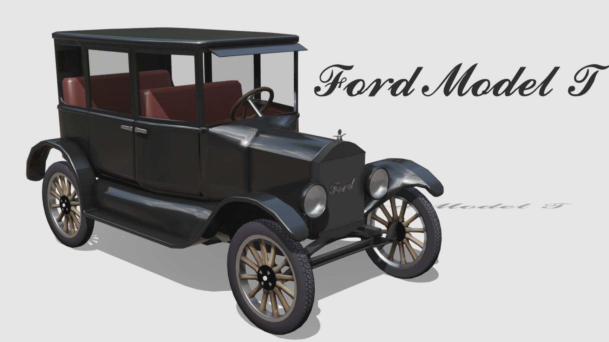

Ford Model T
About
The Ford Model T, also known as the "Tin Lizzie," was a historic automobile produced by the Ford Motor Company from 1908 to 1927. It is considered one of the most influential cars in automotive history and played a pivotal role in making automobiles accessible to the masses. Here are some key facts and features of the Ford Model T:

Informations
- Affordability: The Model T was designed to be an affordable car for the average American. Henry Ford's goal was to produce a reliable, mass-market automobile that the average person could afford. Through innovations in production techniques, he was able to reduce the cost significantly over time.
- Assembly Line Production: The Model T is often credited with popularizing assembly line production methods in the automotive industry. Ford implemented a moving assembly line in 1913, which drastically increased production efficiency and reduced the time it took to build a car from hours to minutes. This innovation not only lowered costs but also allowed Ford to produce more vehicles quickly.
- Simplicity: The Model T was designed to be simple and rugged. It featured a 20-horsepower, 4-cylinder engine that ran on gasoline. It had a simple planetary transmission with two forward gears and one reverse gear. The chassis was made of steel and featured wooden-spoke wheels.
- Versatility: The Model T was produced in various body styles, including sedans, coupes, trucks, and even a convertible. This versatility made it suitable for a wide range of purposes, from personal transportation to commercial use. 
- Black Color: Although the Model T was initially available in various colors, Ford later famously declared that customers could have it "in any color, as long as it's black." This decision was made to speed up the production process and reduce costs.
- Popularity: The Model T was immensely popular and became one of the best-selling cars of all time. By 1913, Ford was producing more than half of all the cars in the United States. Its affordability and reliability made it a staple in American households
- Global Impact: The Model T had a significant impact not only in the United States but also around the world. Ford opened assembly plants in various countries, making it a truly global phenomenon and contributing to the globalization of the automobile industry.
- End of Production: The Model T was eventually replaced by the Ford Model A in 1927. The Model A featured more modern design and technology, marking the end of the Model T's production after nearly 20 years.
Special Ability
The Model T became famous for the stunts it could perform including climbing the stairs of the Tennessee State Capitol and reaching the top of Pikes Peak. After the test of his own product, the vehicle was shipped to its first customer on October 1, 1908.
Today's Price
So, if the Model T were to be sold today, in the year 2021, it would carry a sticker price of $25,223.10
